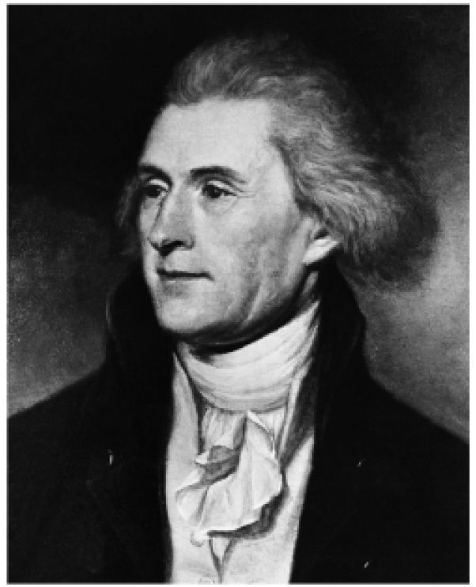

美国独立战争既不是革命，也不是争取民主的斗争，却有着革命和民主的结果。战前几十年，英国的政制体系完全没有作任何民主的虚饰。有人鼓动，要在议会中更加平等地代表放荡者、煽动者和改革者约翰·威尔克斯所谓的“中间人物”，十三个殖民地的骚动事例又为之大大地推波助澜。他们的大多数领头人物，事实上包括威尔克斯本人，怀着不同程度的诚意和玩世不恭，把自身看成是“人民的护民官”，而不是人民的一员。一般来说，改革派被称为“爱国者”，如此称谓是在效法美国殖民地中抗议皇室权威，随后又受到驱动去挑战议会本身的那些人。他们是爱国者，因为他们说这是我们的祖国（patria）、我们的国家，我们用自己的双手耕作的土地。而英国的爱国者（当约翰逊博士粗鲁地说“爱国主义是流氓的最后避难所”时，无疑就是指他们，而他心里想的可能是“杰克”·威尔克斯）还对这个词的附加含义很享受，即国王、宫廷和大领主可能被嘲笑为受他国影响太多——与德国沾亲带故，且染上了柔弱的法国仪态。在这夸张的描述中，又会对诺曼枷锁在不经意间来一次修辞上的发挥。很少有改革者会青睐男子的普选权，正如奥尔德曼·威廉·贝克福德1761年在伦敦公司发表演说时所说的：“先生，我们的政体只有一个缺点，那就是可怜的小镇派驻议会的议员与大城市的一样多；这违背了一项准则，即权力应该源自财产。”或许，正是因为没有想透那条辉格党准则，才让美国的分离在那时而不是以后就不可避免。即使是暴民英雄威尔克斯，也更为接近奥尔德曼·威廉·贝克福德，而不是托马斯·潘恩的“人的权利”。
美国问题揭示了更深层次的恐惧，无疑能回溯到关于英国内战的记忆，以及极端的共和而近乎民主的观念那短暂又可怕的插曲。关于如何安抚焦躁不安的殖民者，一个普遍而明显的建议是赋予他们议会代表权。确实，有人主张他们应该有这样的权利，因为无代表不纳税是理所当然的。对于许多英国辉格党人来说，这似乎是公理。身为查塔姆勋爵的威廉·皮特，七年战争的伟大领袖，实际上认为针对美洲殖民地的《印花税法》（为他们自身的防卫而缴纳）是违宪的、非法的。没有代表，便不该纳税。议会并非在所有事项上都有主权。这是一项有力的主张，但在议会中是少数派的观点。《英国议会议事录》（Hansard）记述了一位匿名议员反对废除《印花税法》的发言：
如果让美洲代表进入议会，我们也不得不让这八百万人得到代表。当然，我们认为他们在议会中由自身中的优秀成员以经验和智慧的结合（被称为“处方”）出色地“实际代表”（埃德蒙·伯克的有用短语）了。国会议员的恐慌还为时过早，但重要的是，我们终于可以看到一些状况，即使没有强有力的民主运动（当时的实际改革者与掘地派的心态基本相同，都倾向于以能够确保“独立”的最低限度的财产作为选举权的基础），在其中也产生了对民主的真正恐惧，而不仅是在设定“良好的老式目标”的那些旧书中读到的东西。那些反对任何改革的人把改革者讽刺为无政府的民主主义者。一些改革者被扣上这顶帽子以后，会挑衅地甚至自豪地戴上它。
在美洲殖民地中，居主导地位的精神气质是“独立”，即一种将商人群体和小农场主都联系起来的积极的个人主义。年轻人在阿巴拉契亚民歌中表达着热爱之情：“我是终身持有产业的人，拥有自己的土地。”在几乎所有州的议会中，选举权的范围已经比英国所有选区（除极少数例外）都要广泛，原因不在于民主情感，而是因为公共土地随处可得。以每年应纳40先令税款的终身产业为基础的投票权普遍存在。更多的人习惯了民主的治理方式，包括投票、请愿和公开辩论；在遭到忽视时也越来越多地进行示威和暴乱。一位王室官员在家信中写道：“暴民们嚷着‘自由和财产’，这意味着他们即将烧毁仓库。”抗议活动若遭到忽视，同时议会又未能给出任何政治和政体上的适当妥协，就会转变成要求独立的主张和斗争，抗议领头人们的思想框架是共和主义而不是民主的。他们希望公民群体积极活跃，同时选举权又有最低的财产限制，以确保选民一定程度的教育资历、责任意识和土地关联。这些人就是“人民”，既是激进的杰斐逊主义者，也是华盛顿和约翰·亚当斯更为保守的追随者。不过，他们都强烈支持宪政，也就是说有一部成文宪法，不是由选举产生的议会即国会来解释，而是由最高法院来解释；在最后定稿的宪法中，总统在就职时宣誓将执行法院的裁决，哪怕要违背行政机构和国会本身的意愿。约翰·亚当斯有句话广为人知，称新政体是“法治而不是人治”。英国议员们崇尚英国政体——在议会主权理论下这种政体正是他们所说的那种情形，亚当斯则说“君权极为暴虐”。当美国人在国家文件中自称为共和国时，不仅仅意味着“没有国王”，而且是指由“人民”的民选代表组成的政府。但是再一次，我们必须停下来解释这个响亮的词语：正如在平等派眼中一样，它意指所有的成年人，除了那些没有应税财产的，当然还要排除女人、印第安人和奴隶。分离和自决的主张明确地基于洛克式观念，即所有（有价值的）个人都拥有天生的权利。排除在外的几类人被默默地忽视，直至半个世纪以后甚至更长的时间。
在新成立的合众国，大力推动对“普通人”的崇拜甚至担当其化身的托马斯·杰斐逊，在蒙蒂塞洛设计并建造自己的房屋。他用上了最新的发明，即空心笔尖自来水笔，这样在写下某个字母时，附在笔上的精致杠杆就能带动其他的笔写出副本，从而省下书记员。他发明或改进了“不说话的侍者”和“服务升降机”，如此一来，以真正的共和式简朴，他可以在桌上亲自为客人服务，视线以外的奴隶则在下面准备好食物再推上来。（当然，在1954年的田纳西州，我在用餐时还受到提醒，不要在“他们”，即殷勤的侍者面前谈论“那个问题”，这也是“行为准则”的一部分。）

图5 托马斯·杰斐逊，《独立宣言》的起草者
然而，在费城制宪会议上或会议前后，“民主”在非凡的辩论中被援引，最终制定出了1787年新的联邦宪法。这是始于抗议和独立运动的一类书写的顶点，美国学者佩里·米勒曾经称之为“公民文学”：关于政府的基本目标和手段的合理辩论，其展开的层面要求具有批判性的智力，同时又用平实的英语来触及普通选民。由普布利乌斯（无疑即亚历山大·汉密尔顿和詹姆斯·麦迪逊）撰写的《联邦党人文集》，不过是其中最为出色和流传最久的例子。围绕上个世纪历次内战的小册子文学，是此类规模、此种类别的唯一先例。这种高质量的公共说理上一次出现在英国，是1886至1914年间围绕爱尔兰问题和上议院改革的。（今天，重大议题在媒体上变得弱智，或者局限于学院中的晦涩语言，对比之下令人感叹；关于权力下放，苏格兰人确实写出了令人印象深刻的“公民文学”，但很少有人阅读。）在美国的这种“公民文学”中，有两个重大问题：中央政府的权力与13个州的权力；以及对于民主统治和选举权应该深入到什么地步所作的制衡。
费城辩论实际上发明了联邦主义的观念，作为中央政府和省级政府之间按成文宪法的规定所作的一致同意的、由法律调整的、有约束力的分权。此前这个词的含义面目模糊，主要与类似古希腊的亚该亚同盟相关，是独立城市之间出于有限的目的为创立共同制度、采取共同行动所订立的条约；与18世纪的瑞士邦联一样，各组成部分要么可以自由脱离，要么各自拥有对多数的否决权。美国联邦宪法则为中央，即联邦政府界定和赋予了有限却重要的权力，同时联盟的各个单独的州保留了其他所有权力（包括对选举权的控制）。这种权力平衡经年累月间实际上发生了怎样的扭转，则是另一回事，从一开始就一直存在争议。为了使向中央分配的这种权力能够得到接受，分权和制衡同时被引入了，行政和立法机构彼此分立（不同于在议会中）。同时存在一个参议院，每州有平等的代表权，以及一个众议院，议员数量与每个州有选举权的人口成比例。随后不久，宪法中就加入了《权利法案》，专门保护公民的个人自由。所有这些安排相当繁复，不过有技巧又有耐心的话还是能够解析，关于民主的争论看起来则是根本的和关键的。与一个世纪前的普特尼辩论一样，那些拿起武器的人无意再受旧式议会之类的制度蒙骗，即便已没有国王，而且现在也控制在他们的“高等”同胞手里。
不妨以1787年5月31日辩论的总结报告为例，是关于如何选举众议员的。各方意见分歧明显。保守派，或者按他们很快就自称的叫法（窃取来的名字）即联邦党人，主张间接选举。“谢尔曼先生（来自康涅狄格）反对由人民选举，坚持认为应该由州立法机构来选。他说，就直接事务而言，人民在治理方面应该尽可能一无所为。他们缺乏信息，并且总是容易被误导……”“格里先生（来自马萨诸塞）说，我们所经历的罪恶来自民主的泛滥。人民不缺美德，但是容易受到伪装的爱国者蒙骗……他说，他在此之前也一直是共和主义者，当时仍然是共和主义者，只是根据经验得知这种消除差别的精神很危险。”在马萨诸塞，“让公务员匮乏似乎是民主的一条准则……平民吵闹着要求降薪”。但是，“梅森先生（来自弗吉尼亚）坚决主张由人民来选举人数更多的分支。这里要成为承载政府的民主精神的庞大处所……它应该了解共同体的每一部分并与他们感同身受。他承认我们一直过于民主了，又担心我们一不小心走到另一个极端。我们应该关心人民中每一个阶层的权利。他常常感到诧异的是，社会上层人士对这种人性和政策方面的支配如此漠不关心”。请注意，他既说到“人性”又说到“政策”，同样的务实精神使他承认，民主既可能太少也有可能太多。民主是善治的一个重要因素，但不是全部。
然而，来自宾夕法尼亚的一个叫威尔逊的人，看起来对现代政治的本质有着根本的洞察，他把两项主张结合在一起，一项支持联邦与各州权力的分立，另一项支持民主与受限的选举权之间的分立。他“力主从人民当中直接抽取立法机构中人数最多的分支。他支持把联邦金字塔拉升到相当的高度，因此希望赋予其尽可能广泛的基础。没有人民的信任，任何政府都无法长久维持”（黑体由我标注）。
多年以后，托马斯·杰斐逊和约翰·亚当斯都垂垂老矣，杰斐逊回顾了这一切，写信给他从前的对手：“选举选出专制并不是我们奋力以求的目标。”他的政党已经从自称为辉格党转而自称为民主共和党，经常也称为“民主党”，声称是真正属于普通民众和普通人的党；然而，他们的信念和演说中描述的个人权利，与多数人的权利（和权力）一样多。民主的含义开始在民众的理解中扩大，纳入了自由和权利，但有些人，当然也包括杰斐逊本人，仍然意识到在不同的时候它们可能是朝不同方向拉动的不同力量。在起草《独立宣言》时，杰斐逊把洛克说的所有人的自然权利从“生命、自由和地产（estate）”［当时和现在都普遍被错误地引用为“生命、自由和财产（property）”］改成“生命、自由和追求幸福”。“杰斐逊式民主”后来渐渐意指在政治和社会层面崇拜“普通人”，即能着手做任何事的人。他可以亲手耕种自己的土地，可以阅读法律书籍以及时事小册子，可以在下级法院或者城镇会议上自如地陈述事实，必要的时候他会携带或者拥有武器（根据宪法权利）来捍卫共同的自由。杰斐逊主义者想必会同意卢梭和康德的观点，即每个人自己身上都有一种共同理性和道德感觉，那就是公意或良知——随你怎么称呼——如果以谦逊的朴素加以运用，直截了当而不追逐时髦或炫耀学问地弄巧，没有私心而满怀同情，我们就会得出与邻居和同胞极为相似的结论。普通人身上有常识。一种新的民主道德正在诞生，尽管实际上它是在遭到违反而不是得到服从的情况下备受尊崇的。
所以，在独立战争和新宪法形成的过程中，民主并不是激励的力量，各个州在独自确认或改革现有的投票制度时，也没有迈向民主的亦即普遍的白人男性选举权，那是当时可能达到的极限。甚至谈不上这一点。大多数州的立法机构固守着老式的终身有产者选举权，尽管情况各有不同。曾经有人说，真正的民主和选举权的扩张始于平民英雄安德鲁·杰克逊将军于1829年当选总统，他来自新加入联邦的边疆州田纳西。对手们惊恐地称之为“一颗未经加工的金刚石，一个蛊惑人心的人，如果曾有过这种人的话”。这就是所谓“杰克逊式民主”的时代。
不过，历史学家们现在指出，如果不是大多数人即“平民”已经获得了投票权，如果不是通过民主改革，而是通过土地价值的逐渐膨胀使得旧式的“四十先令终身产业”（往往从殖民地时代起就没有变过）很容易获得，杰克逊可能永远无法当选。但是，说土地价值的膨胀带来的是民主的选举权而不是意识形态，就是风凉话了，也过于简单。很多人都情愿抬高选举资格条件，只是在新的民主风气下不敢尝试罢了。政治行为和社会性质两方面都再也不同于以往了。
一些同时代人和大众历史学家把这段时期称为“民主的胜利”，但这种胜利并不能确保前方没有麻烦。如果在数量众多的州中，民主的多数派（现在霸占了这个名字成立民主党了）想要脱离联盟，而不是眼看着奴隶制这一“特殊制度”受到威胁，情况会如何呢？费希尔·埃姆斯是一位真正的、罕见的美国反动派，更像是英国托利党人而不是马萨诸塞州最高法院的法官，他讽刺说：“君主制像是一艘华丽的船，所有的风帆让它庄严地前行，但随后撞上一块岩石，永远沉入水中。民主制像是一条木筏，永远不会下沉，但是该死的是，你的脚总是浸在水里。”比喻很贴切，因为他暗指木筏不过是被潮汐或水流冲着往前走；可以用船桨或木板略加操控而保持漂浮，把方向稍微向左或向右调一下，甚至可能放慢或加快一些，但是，在民主的潮流面前不可能掉头转身。